.jpg){kind=link}
Protected natural area encompassing a massive volcanic crater, subalpine shrublands, native rainforests, and endangered species habitats.
General Information
How to Get There
From Kahului (30 mi): Take HI-37 to HI-377, then follow HI-378 uphill to the park entrance and summit area.
Overview
Haleakalā National Park preserves more than 33,000 acres on Maui, from the summit of the 10,023-foot Haleakalā volcano to the tropical pools of the Kīpahulu coast. The park is famed for its otherworldly summit crater, its sunrise and sunset views above the clouds, rare native species such as the ʻāhinahina (silversword) and the endangered nēnē (Hawaiian goose), and the waterfalls and bamboo forest of Kīpahulu. Haleakalā means "house of the sun," and legend says the demigod Māui snared the sun here to lengthen the day.
The area became part of Hawaii National Park in 1916 and a separate national park in 1961, and it is an International Biosphere Reserve. People come to watch the sunrise from the summit, one of the most popular activities in Hawaii, to hike through the crater, to stargaze above the clouds, and to visit the pools and waterfalls of Kīpahulu. The giant crater, actually an erosional valley about 7 miles long and 2,600 feet deep dotted with cinder cones, looks like a lunar landscape.
Park Sections
The park has two distinct sections that are not connected by road. The Summit District, reached by a winding road from Kahului, includes the Park Headquarters Visitor Center, the Hosmer's Grove campground, the crater overlooks, and the summit. The coastal Kīpahulu District, on Maui's remote southeast coast, is reached by the Hana Highway and has ʻOheʻo Gulch, the Kīpahulu Visitor Center, and the Pipiwai Trail. The two sections are about 2 to 3 hours apart by car, so most visitors choose one or split their visit over two days. The upper Kīpahulu Valley is a biological reserve closed to the public.
Sightseeing and Exploring the Park
The summit road, Highway 378, climbs about 11 miles of switchbacks from the park entrance. Along the way, Leleiwi Overlook and Kalahaku Overlook look into the crater and sometimes show the "Brocken Spectre," a shadow ringed with a rainbow in the clouds. The Haleakalā Visitor Center at 9,740 feet has the best views of the crater, and the Puʻu ʻUlaʻula summit at 10,023 feet is the highest point. Reservations are required to enter the summit area for sunrise, so book in advance on Recreation.gov. In Kīpahulu, the Hana Highway is a scenic drive of its own, with hundreds of curves and one-lane bridges.
Hiking
Trails at the summit range from short to very long. The Hosmer Grove Nature Trail (0.5 miles) is easy and the Leleiwi trail is a short walk to an overlook. The Keonehe'ehe'e (Sliding Sands) Trail descends into the crater, and most day hikers go a few miles down and back; the climb out at 10,000 feet is hard work. The Halemauʻu Trail also leads into the crater through switchbacks. In Kīpahulu, the Pipiwai Trail (4 miles round trip) leads through a bamboo forest to the 400-foot Waimoku Falls, and the Kuloa Point Trail is a short walk to the pools. The altitude, cold, and sun make hiking at the summit tiring.
Other Activities
Besides sightseeing and hiking, the park is known for stargazing, because the summit is far above the clouds and the air is clear and dark. Ranger programs, cultural talks, and sunrise talks are offered. Backpackers can stay at three wilderness cabins in the crater (Holua, Kapalaoa, and Paliku), which are reserved through a lottery, or camp at Hosmer Grove or Kīpahulu. Commercial guided bike descents and stargazing tours are offered by outfitters from Kahului and Upcountry Maui, with some restrictions. Swimming in the ʻOheʻo pools is only sometimes allowed, because of rockfall and flood risk, so check with rangers.
Flora and Wildlife
Haleakalā is known for the silversword (ʻāhinahina), a rare plant that grows only in the volcanic summit areas of Maui and Hawaii and blooms once in its lifetime, after 15 to 50 years, with a tall spike of flowers. The park also protects native forests and shrublands, the bamboo forest in Kīpahulu, and tropical plants along the coast. The nēnē, Hawaii's state bird, is often seen near the summit and Hosmer Grove. The endangered ʻuaʻu (Hawaiian petrel) nests in burrows in the crater, and native birds such as the ʻiʻiwi and ʻapapane live in the forests. Please stay on trails, since silverswords are easily damaged.
Access
The summit entrance is about 30 miles (roughly 1.25 hours) from Kahului, where Maui's main airport is located, via Highways 37, 377, and 378. From Lahaina and the resorts on the west side, allow about 2 hours. The Kīpahulu District is about 60 miles from Kahului on the Hana Highway, a drive of about 2.5 hours one way, with narrow curves and one-lane bridges. Visitors arrive by car, and there is no public transportation to the park, though tours from Kahului and the resorts are available. Gas up before you go, since there is no gas in the park.
Seasons
The park is open all year, and weather matters more than season. The summit is high and cold, with temperatures near freezing before sunrise, strong winds, and sometimes snow in winter, so dress in layers. Clouds can hide the view at any time of year, and the best weather tends to be in summer and fall. Kīpahulu is warm, humid, and rainy, with the most rain from November through March. Heavy rain can cause flash floods and close the Hana Highway or the ʻOheʻo pools. Sunrise is busy year-round, and sunset and stargazing are quieter alternatives.
Camping and Lodging
The park has two drive-in campgrounds, Hosmer Grove at the summit area (first-come, first-served) and Kīpahulu at the coast, as well as backcountry camping at Holua and Paliku with a permit, and the three wilderness cabins. There is no lodging inside the park. Upcountry Maui, including Kula, Pukalani, and Makawao, has inns and B&Bs about 45 minutes to 1 hour from the summit. Kahului and Wailuku have chain hotels near the airport, Kīhei and Wailea have resorts about 1.25 hours away, and Lahaina and Kāʻanapali on the west side are about 2 hours. For Kīpahulu, the town of Hana has the Hotel Hana-Maui and small inns and vacation rentals.
Visitor Centers
The park has three visitor centers. The Haleakalā Visitor Center at 9,740 feet near the summit has exhibits and views of the crater and is a popular spot at sunrise. The Park Headquarters Visitor Center at 7,000 feet, near the entrance, is where visitors get information, camping and cabin permits, and backcountry advice. In Kīpahulu, the Kīpahulu Visitor Center offers information and ranger programs near ʻOheʻo Gulch. Hours vary by season, so check the National Park Service website.
This article uses material from the Wikipedia article "Haleakalā National Park", which is released under the Creative Commons Attribution-Share-Alike License 3.0. Additional information comes from the National Park Service Haleakalā National Park website.
Featured Locations and Trails
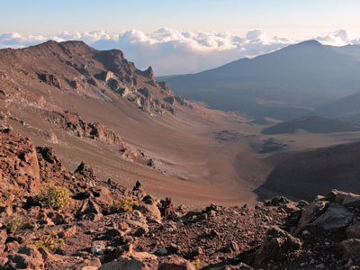
ImagePerson, CC BY-SA 4.0, via Wikimedia Commons; Image Size Adjusted

Falls at Makahiku
A nearly 200-foot cascade plunges into a lush, tropical gorge, visible from a scenic overlook along a forested hiking trail.
ImagePerson, CC BY-SA 4.0, via Wikimedia Commons; Image Size Adjusted
Haleakala Volcano
Massive shield volcano featuring a vast summit crater, rugged hiking trails, and dramatic sunrise views above the clouds.
ImagePerson, CC BY-SA 4.0, via Wikimedia Commons; Image Size Adjusted
Halemauʻu Trail
A rugged alpine trail that descends through volcanic landscapes, switchbacks, and native shrubland into the vast Haleakalā Crater.
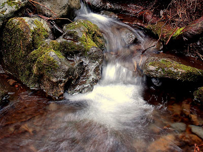
Douglas Knisely from USA, CC BY-SA 2.0, via Wikimedia Commons; Image Size Adjusted

Hosmer's Grove
High-elevation campground nestled in a misty forest clearing with native birdlife, cool temperatures, and access to scenic hiking trails.
ImagePerson, CC BY-SA 4.0, via Wikimedia Commons; Image Size Adjusted
Hōlua Cabin
A rustic backcountry shelter nestled in native shrubland at the base of a volcanic crater wall, accessible only by trail.
ImagePerson, CC BY-SA 4.0, via Wikimedia Commons; Image Size Adjusted
Kalahaku
A cliffside viewpoint offering panoramic vistas of volcanic cinder cones, native silversword plants, and the vast Haleakalā Crater.
ImagePerson, CC BY-SA 4.0, via Wikimedia Commons; Image Size Adjusted
Kapalaoa Cabin
A remote backcountry shelter perched in a grassy field near the southern crater wall, accessible only by a long hike through volcanic terrain.
ImagePerson, CC BY-SA 4.0, via Wikimedia Commons; Image Size Adjusted
Kaupo Trail
A rugged and remote backcountry route ascending over 6,000 feet from the coastal lowlands to the summit crater through diverse and challenging terrain.
ImagePerson, CC BY-SA 4.0, via Wikimedia Commons; Image Size Adjusted
Keoneheʻeheʻe Trail
A high-altitude trail that descends from the summit into a vast volcanic crater, revealing surreal landscapes of cinder cones and rare alpine flora.

Kipahulu, HI
Remote coastal area offering lush rainforest, waterfalls, cultural sites, and access to scenic hiking trails.
ImagePerson, CC BY-SA 4.0, via Wikimedia Commons; Image Size Adjusted
Koʻolau Gap
A dramatic breach in the crater wall formed by erosion, offering a natural corridor from the summit basin to the lush northeast coast.
ImagePerson, CC BY-SA 4.0, via Wikimedia Commons; Image Size Adjusted
Kīpahulu Valley Biological Reserve
A pristine, high-elevation rainforest sanctuary home to rare native Hawaiian species, closed to the public to protect its fragile ecosystem.
ImagePerson, CC BY-SA 4.0, via Wikimedia Commons; Image Size Adjusted
Leleiwi
A short trail leads to a panoramic overlook offering views into the crater, across ancient lava flows, and out through the Koʻolau and Kaupō Gaps.
ImagePerson, CC BY-SA 4.0, via Wikimedia Commons; Image Size Adjusted
Palikū Cabin
A remote backcountry cabin nestled at the base of rainforest cliffs on the eastern edge of the crater, offering solitude and lush scenery.
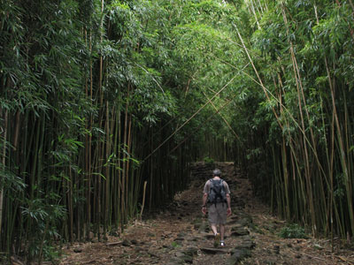
Katie (alaskahokie) from Anchorage, Alaska, USA, CC BY 2.0, via Wikimedia Commons; Image Size Adjusted

Pipiwai Trail
Popular rainforest trail featuring a giant banyan tree, bamboo forest, and a 400-foot waterfall at the end.
ImagePerson, CC BY-SA 4.0, via Wikimedia Commons; Image Size Adjusted
Pools of ʻOheʻo
A series of cascading freshwater pools and waterfalls nestled in a rainforest gulch near the coast, surrounded by lush vegetation and steep cliffs.
ImagePerson, CC BY-SA 4.0, via Wikimedia Commons; Image Size Adjusted
Puʻu ʻUlaʻula Summit
The highest point on Maui, offering panoramic views above the clouds from a volcanic summit at over 10,000 feet elevation.
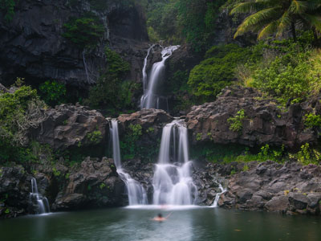
Joe Parks from Berkeley, CA, CC BY 2.0, via Wikimedia Commons; Image Size Adjusted
.jpg){kind=link}
Seven Sacred Pools
A series of cascading waterfalls and freshwater pools nestled in a rainforest gulch, surrounded by dramatic cliffs and lush vegetation.
ImagePerson, CC BY-SA 4.0, via Wikimedia Commons; Image Size Adjusted
Silversword Loop
A high-elevation loop trail winding through volcanic terrain and showcasing dense clusters of rare, silver-leaved plants found nowhere else on Earth.
ImagePerson, CC BY-SA 4.0, via Wikimedia Commons; Image Size Adjusted
Waikamoi Preserve
A vast, high-elevation rainforest sanctuary protecting rare native Hawaiian birds and plants, accessible only by guided hikes through private conservation land.
ImagePerson, CC BY-SA 4.0, via Wikimedia Commons; Image Size Adjusted
Waimoku Falls
A towering 400-foot waterfall cascading down a sheer lava rock wall, reached via a lush rainforest trail through bamboo groves and stream crossings.
ImagePerson, CC BY-SA 4.0, via Wikimedia Commons; Image Size Adjusted
ʻOheʻo Gulch
A lush stream-carved valley featuring tiered pools and waterfalls surrounded by rainforest, located near the coast in the Kīpahulu District.
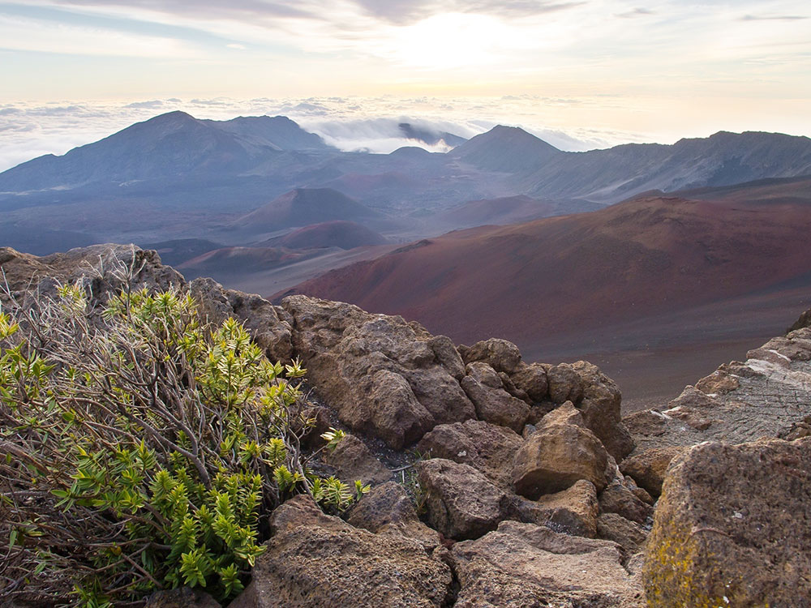

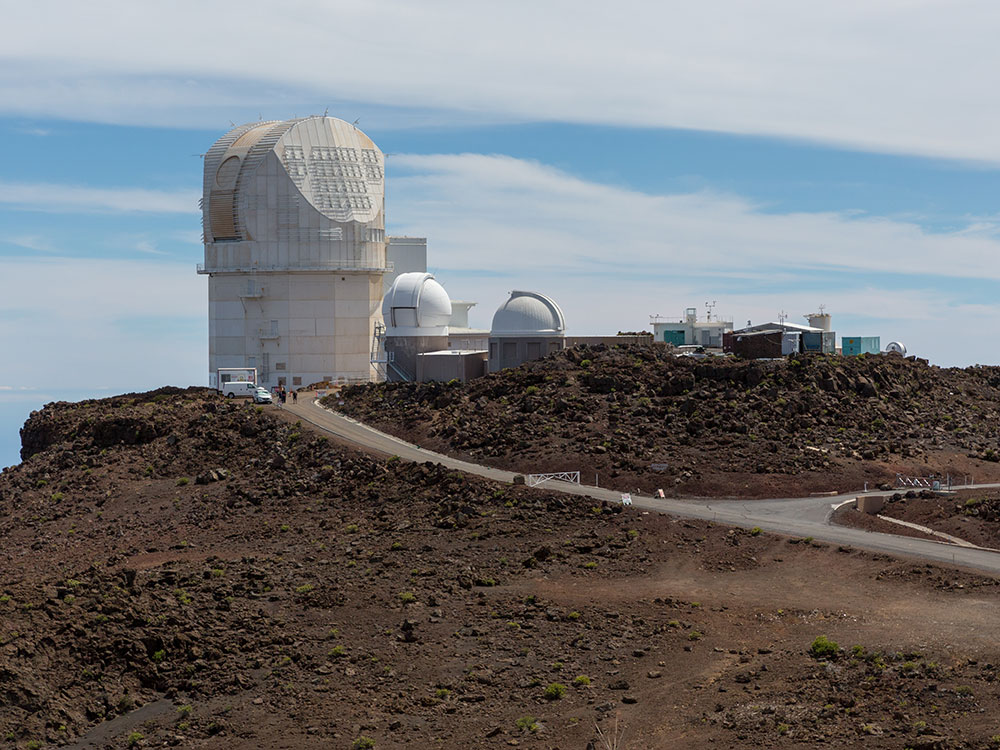

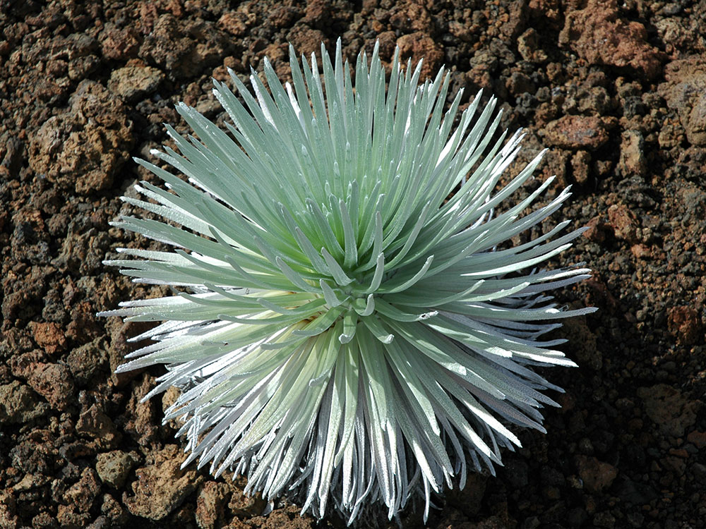

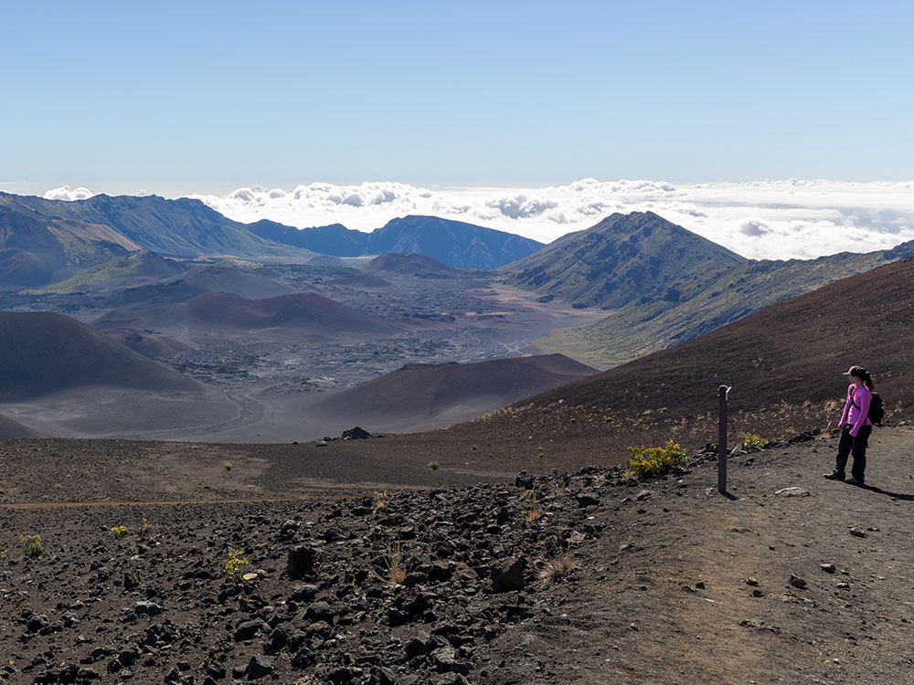
.jpg){kind=link}
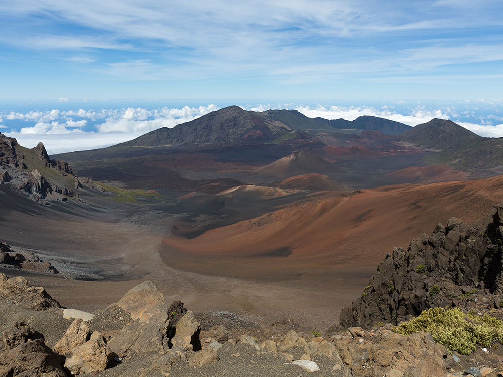
.jpg){kind=link}
-1000.jpg)
.jpg){kind=link}
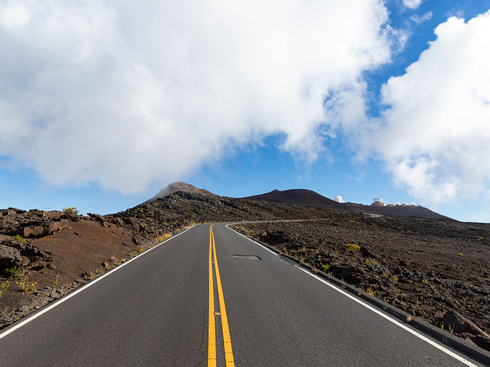
.jpg){kind=link}
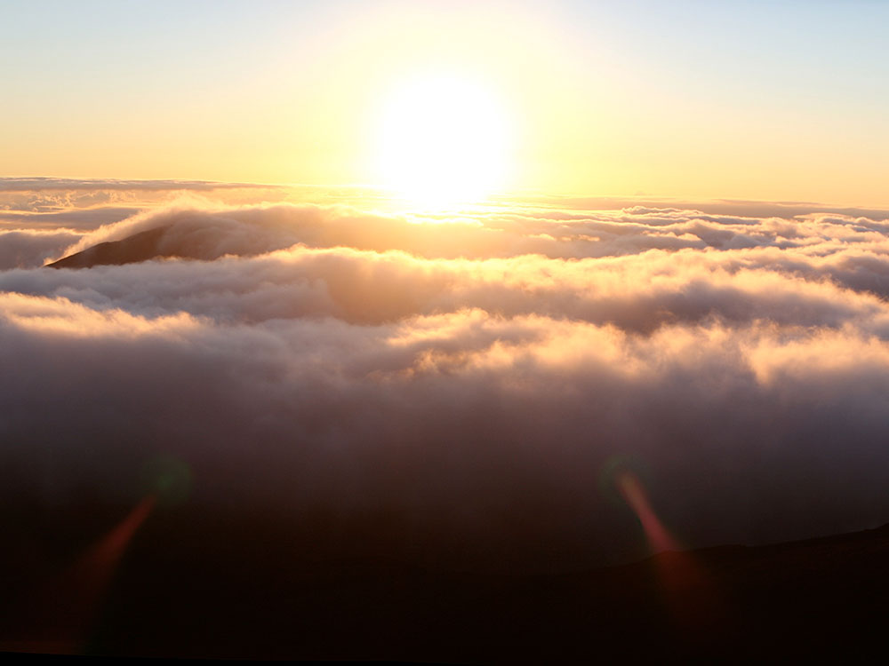

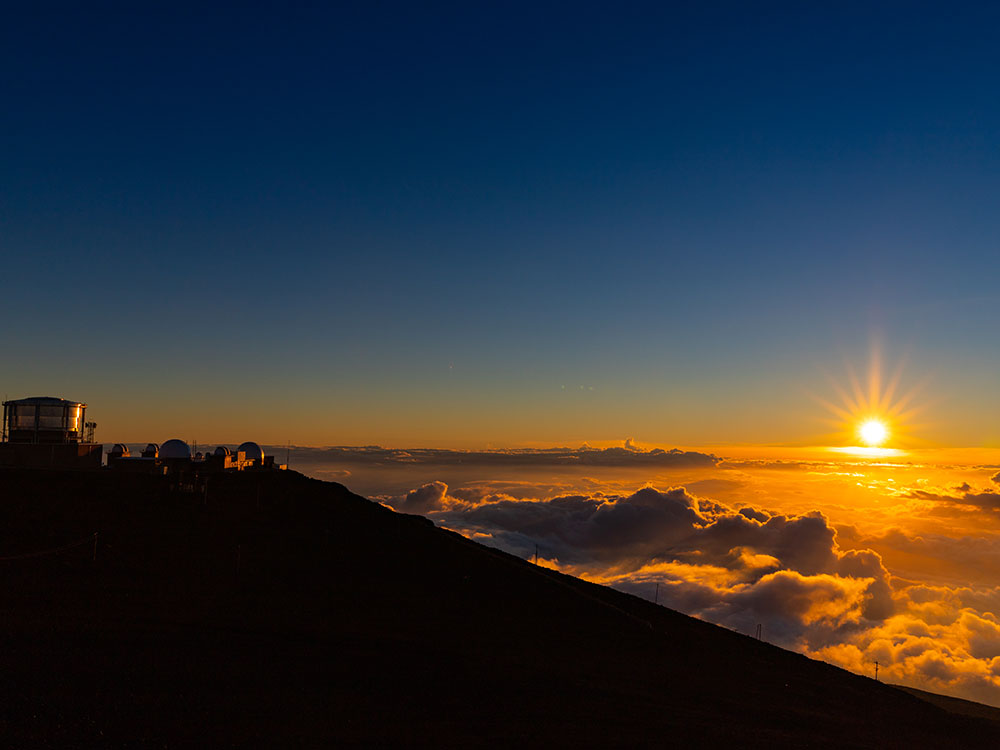
.jpg){kind=link}